第一章 概论 & performance
- Dennard Scaling: Power density is constant for a given area, end in 2004
- Moore's law: number of transistors per chip double every (two since 1975) year, end in 2015
-
Amdahl's law:
$Speedup=\cfrac{Exe\ time_{old}}{Exe\ time_{new}}=\cfrac{1}{(1-Frac_{enhanced})+\cfrac{Frac_{enhanced}}{Speedup_{enhanced}}}$
-
Lhadma's Law: Uncommon case not too slow
- Computer types [important!]: (P)ersonal (M)obile (D)evice, Desktop, Server, Cluster/(W)arehouse(S)cale(C)omputer, Embedded/IoT computer
- PMD: Cost effectiveness, heat manage, real-time, memory manage
- Desktop: price-performance
- Server: Availability(up time percentage), Scalability, High throughput
- Parallelism [important!]:
- application level: DataLP, TaskLP
- hardware level: InstLP(pipeline, speculative), Vector/GPU/MM, ThreadLP, RequestLP
- Parallel arch: SISD, SIMD(vect & gpu), MISD, MIMD(TLP, RLP)
- ISA [important!]: Class(register-mem, load-store), mem addressing(alignment), op size & type, address mode, op(data, alu, control, float), control flow inst, encoding
- Concepts: Bandwidth & throughput, latency & response time
- $E=\overline{P}\times t_{exe}$
- $E_{dynamic}\propto Capacitive\ load\times V^2$
- $P_{dynamic}\propto E_{dynamic}\times frequency$ 降频，降功不降能, $P_{static}=I\times V$
- Impove Energy: (D)ynamic (V)otage-(F)requency (S)caling, design for typical case, overclock/turbo, ...
- $Dies\ per\ wafer=\cfrac{\pi r^2}{Die\ area}-\cfrac{\pi d}{\sqrt{2\times Die\ area}}$
- $Die\ yield=Wafer\ yield\times\cfrac{1}{(1+Defects\ per\ unit\ area\times S_{Die})^N}$
- (CAP)ital (EX)pense(build cost), (OP)erational (EX)penses
- Dependability(is operating properly?) [important!]: (S)ervice (L)evel (A)greements, (S)ervice (L)evel (O)bjectives; Failure(not right), Fault causes Error and might turn to failure
- Mean Time To Fail, Mean Time To Repair, Mean Time Between Failures = $MTTF + MTTR$, Availability = $\cfrac{MTTF}{MTBF}$
- RAID: 0, 1(dupe, x2), 2(ecc/hamming code, ?+3), 3(bit parity, +1), 4(block parity, +1), 5(distribute parity, +1), 6(row-diagonal parity, +2)
- Matrises: Execution/response Time, Throughput, performance, A is n times faster than B $n=\cfrac{t_B}{t_A}=\cfrac{Performance_A}{Performance_B}$, CPU time vs Elapsed time(with io ans stuff), SPEC, SPECRatio($\cfrac{t_{ref}}{t_A}$)
- Quantitative principles [important!]: temporal(time) locality, space locality, focus on common case, parallelism
- CPU time, CPI, IPC, $CC = IC \times CPI$
第二章 Memory
- SRAM for cache, DRAM for main mem
- SRAM: Direct map 1-to-1, Fully Associative 1-to-all, Set Associative,
- DRAM: (C)olumn/(R)ow (A)ccess (S)trobe
- Average Memory Access Time $=(1-p_m)\times t_h + p_m\times t_m=t_h + p_m\times penalty_m$
- Optimizations: block size, cache size, associative, multi-lvl, prioritize read over write, virtual index & physical tag
- Cause of miss: Compulsory(Cold start), Capacity, Conflict
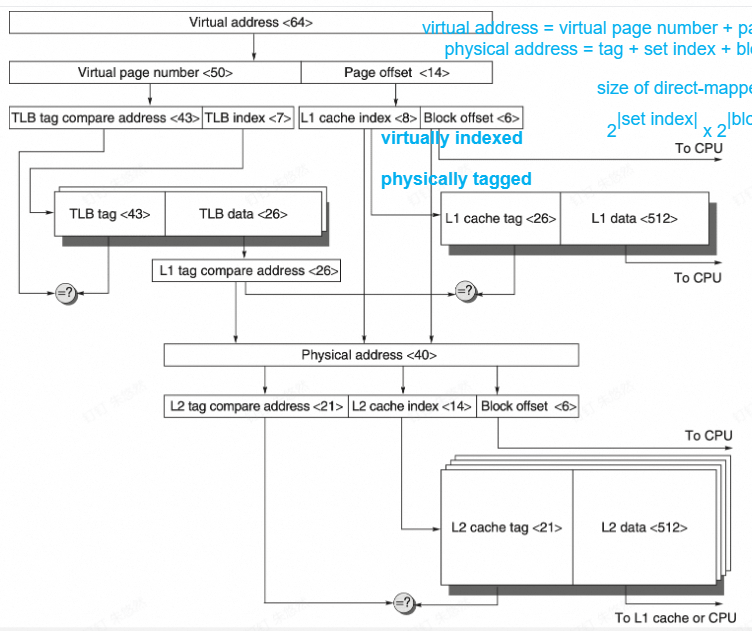
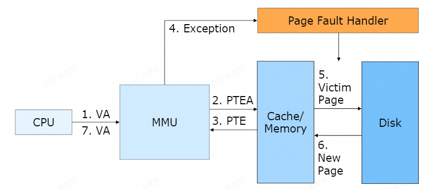
- TLB: va(page) to pa(frame) buffer
- cache Optimization:
- Way prediction: to return one data for associative cache to reduce checking for all slots
- Multibanked caches: support simultaneous access
- Pipelined Access
- Nonblocking Cache: serve hits during miss
- Critical word first(first get the requesed)/Early restart(return the requested as soon as ready)
- Merge write buffer
- Compiler: Loop interchange, Blocks
- Hardware Prefetching: for example inst
- Compiler Prefetching
- (H)igh (B)andwidth (M)emory
- VM: modes(U/S/M...), R/W/X control, mode switch, inst sets, VMM
第三章 Instruction Level Parallelism
- Latency: 间隔n个cc到值有效，例：alu为0
- Initiation/Repeat Interval: 每n个cc可以issue一个
- Structure hazard: double write(stall / shift reg detect and not issue) & not enough modules
- Dependence: Data(RAW), Name(WAR, WAW), Control(if, ...)
- Static Scheduling: Re-order inst, loop unrolling
- Trace Scheduling: find the most frequent path and compress it.
-
Fixup Code: copy code to other path after reorder.
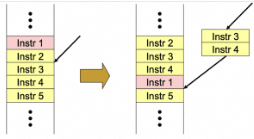
-
Super block: single entrance, multiple exits(to the same stuff)
- Branch Hazard Solutions: Stall & flush, predict-taken, predict-untaken, delay branch(the next inst must run no matter branch)
- Fetch Stage with (B)ranch (P)redict (B)uffer & (D)irection (P)redictor (static)
-
(B)ranch (H)istory (T)able:
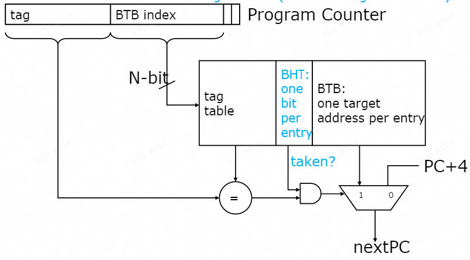
-
2-bit predictor: change after 2 consecutive miss
- n-bit predictor: ++ / -- on taken / not taken, >= half then taken.
-
Local Predictor: have a redictor for whether last time is taken or not taken.
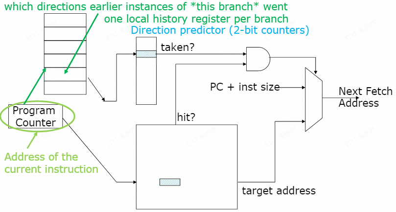
-
Global Predictor: Use the history of if other branch is taken, a predictor for every case.
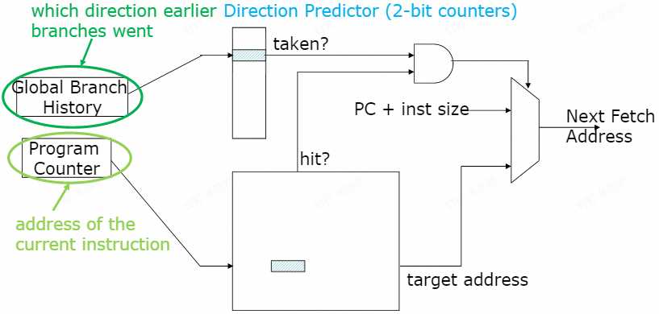
-
(m, n)predictor, m global history bits, every global history with n-bit counter
- gshare/hybrid/alloyed predictor: xor the branch history and PC as the "history" in (m, n) predictor
- tournament predictor: two types of predictors and another selector to see which is better
-
tagged hybrid predictor: use tags in global predictor table(aka, "history" to which n-bit predictor to use) tag should be hash with global history(length can vary) and PC, choose the matching hash with longest history, have a fallback if no match
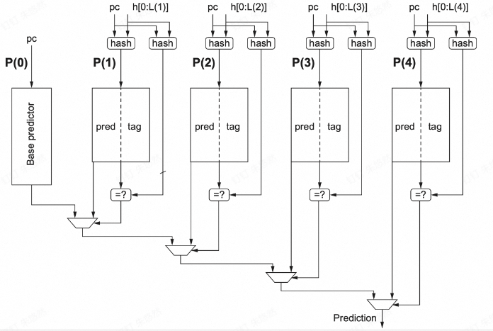
-
Dynamic Scheduling: ID -> issue & read-op
- Scoreboarding:
- IS: Issue, Read op, Exe complete, Write result
- FUS: Busy, Op, $F_i$(dst, reg_num), $F_j, F_k$(src, reg_num), $Q_j, Q_k$(waiting for another FU's result?, FU_name / null), $R_j, R_k$(when waiting: data ready? bool)
- RRS: FU(FU_name)
-
Tomasulo:
- (C)ommon (D)ata (B)us
- Reservation stations
- no WAW and WAR through reg renaming(using RS)
- IS: Issue(& read), Exe, Write result
-
(R)eservation (S)tation (S)tatus: Op, $Q_j, Q_k$(Source FU of src, null if ready), $V_j, V_k$(src values), A(imm(before)/mem addr(after)), Busy
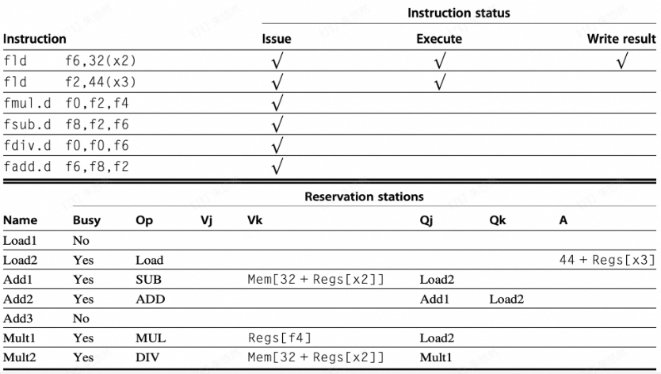 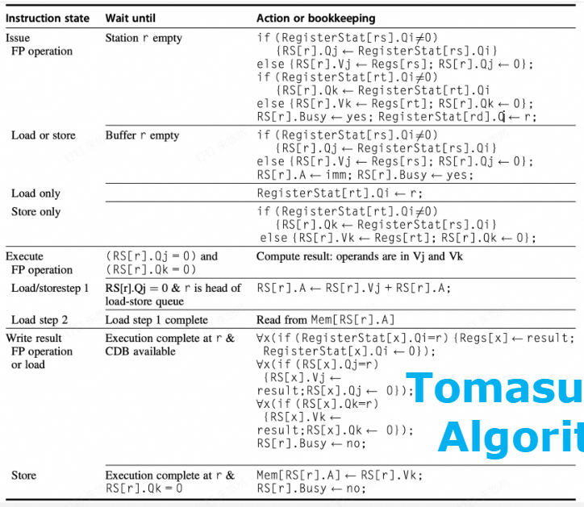
-
Tomasulo With branch prediction: refetch if prediction wrong, don't commit, only commit the first entry of ROB
- "IS"(part of ROB): Iss, Exe, Write, Commit
- (R)e(O)rder (B)uffer: Inst, Dst, Value, Busy, State, Ready
-
RRS: Reorder(which ROB entry write to me), Busy
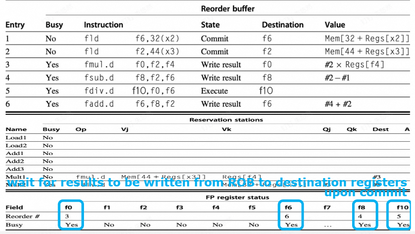 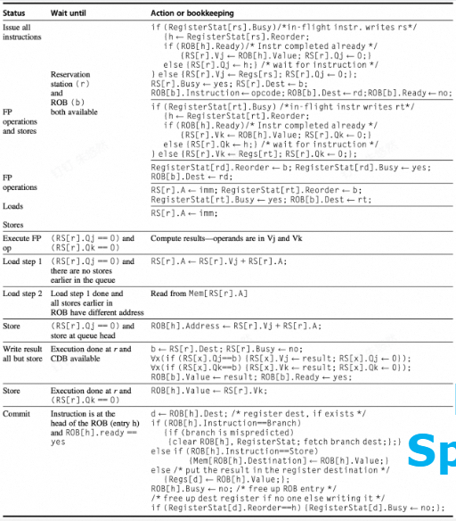
-
RS free on Write, ROB free on commit(aka. structure hazard end on write, the next cc can use RS again)
- 隐式重命名：tomasulo用ROB；显式重命名：嗯搞。
- Multiple Issue: static cheduled superscalar(multiple everything), (V)ery (L)ong (I)nstruction (W)ord(multiple EXE), dynamically scheduled superscalar
- Multiple Issue: branch execute is a check point, value ready after write to CDB
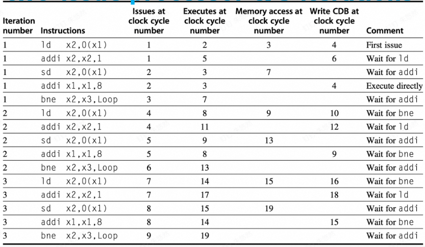
-
Branch Prediction: 2cc for wrong panelty
- Branch folding: store inst instead of/ alongside with target PC
- Return address stack
- Multithreading: Fine-grained(per cc), Coarse-grained(only on costly stall), simultaneous(Can have multiple thread in one cc)
第四章 Data Level Parallelism
Vector
- Convoy: the set of inst that will not cause structure hazard
- Chime: the time taken to exec the convoy
- Optimize: Multi-lane
- Vector length register(VL), max vl(mvl)
- Vector mask(if)
- Mem Banks: min bank size = max cpu access rate / single RAM access rate
- Stride: access mem a[i], a[i+n], a[i+2n], ...; Unit stride = 1
- (V)ector (L)oa(D) with (S)tride, V(ST)oreS
- Bank busy time should be $\leq$ access interval, which can be calc by stride and mem inst interval, otherwise there will be stall
- Gather-Scatter: use another vector as index
MultiMedia SIMD
- (FL)oating(OP)erations/s = MIN(Peak mem bandwidth$\times$FP per mem access, Peak FP speed)
Loop Level Parallelism
- in-iteration dependence
- cross-iteration dependence(loop-carried)
- GCD test, for index aj+b and ck+d, if (b-d)%gcd(c, a)!=0, no loop-carried dependency
- Dependency types: true dependency(RAW), antidependency(WAR), outputdependency(WAW)
第五章 Thread Level Parallelism
- (S)ymmetric/Centralized Shared-memory (M)ulti(P)roccessor, (D)istributed Shared-memory (M)ulti(P)roccessor
- Cache Coherence: Global state(mem), Local state(cache)
- after a write, everyone should get the result if no write
- read another proccess's write will return the reuslt
- write order is the same for every one
- Directory based
- Cache states: Shared(mem up to date), Uncached(no one have a copy), Modified(one node have a copy, mem out of date)
- 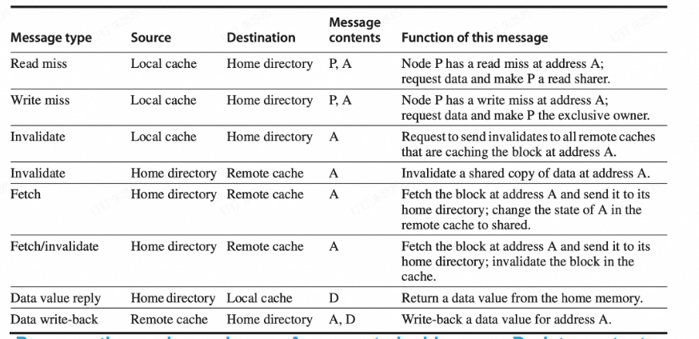
- 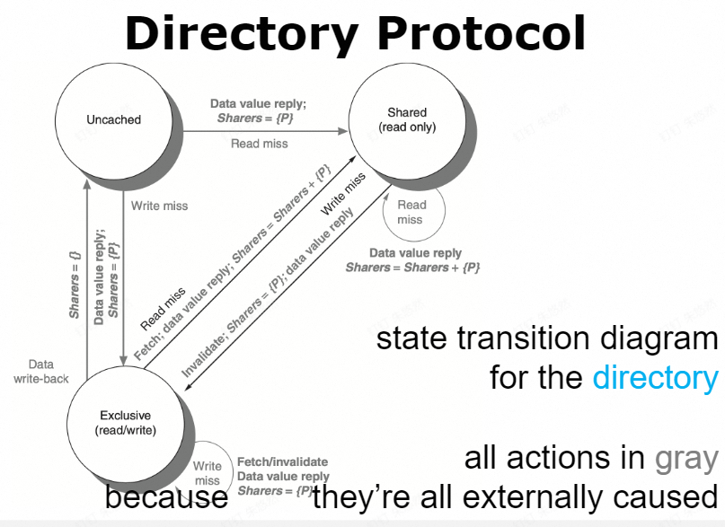
- Snooping
- write invalidate: write back to mem and invalidate all others, if other is already dirty, abort
- write update/broadcase: update everyone else
- MSI: Modified, Shared, Invalid
- 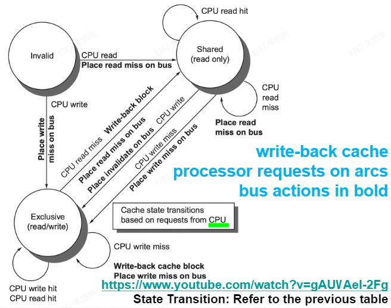
- 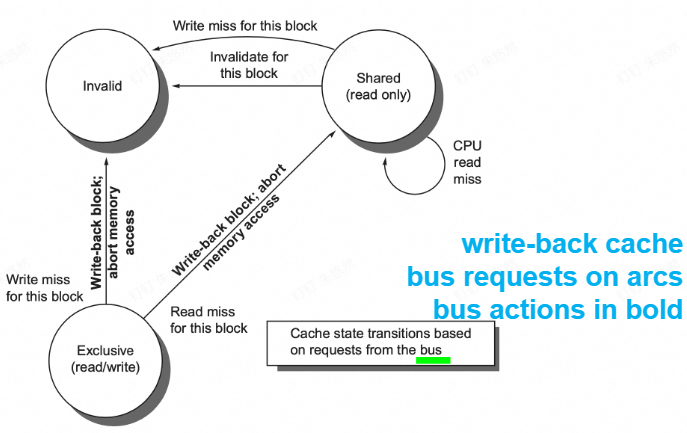
- MESI: E for when there's only one but clean, write on e does not need invalid on bus
- MOESI: O for owned modified by the cache, out of date in mem(read miss of M does not need to write back, only do that when replaced)
- MESIF: F for forward, who should response to a request
- Coherence Miss:true miss, the data been read is miss; false sharing miss when some other data in the same block cause the miss.
- Synchrinization & Consistency
- Load Reservation(lr.rd) & Store Conditional(sc.rd write 0 on success)
- spin lock: try to get lock until success
- data-race-free: variable can be updated without sync an d no problem
- orders:
- ordinary ordering/squential consistency: $R\rightarrow W, R\rightarrow R, W\rightarrow W, W\rightarrow R$
- total store ordering: $R\rightarrow W, R\rightarrow R, W\rightarrow W$
- partial store: $R\rightarrow W, R\rightarrow R$
- weak ordering: none
- Sync ordering, Release consistency: S with everything else, $S_A, S_R$(Aquire and Release), everything after $S_A$ must be after, former than $S_R$ must be former
- 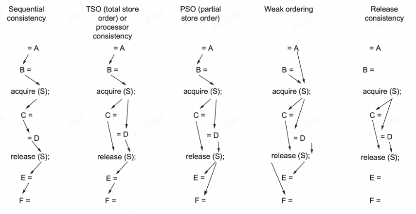